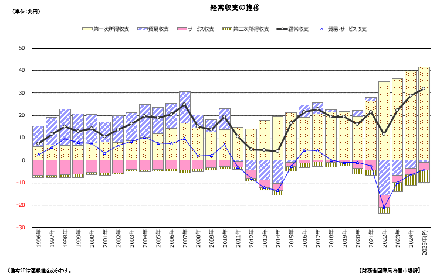

10/国際収支
国際政治経済I
2026-06-22
今日の目次
- はじめに
- 国際収支の概要
- 国際収支の各項目
- 複式簿記と国際収支
- 国際収支の計算
- まとめ
はじめに
先週のRPより
日本も以前セーフガードの措置をとったというところで、ねぎの産地である群馬は自民党の支持基盤であるため保護したという話でしたが、政府の意図が表れていると考えると、日本の政治は汚いなと思いました。
国連の安保理もコンセンサス方式である。
拡散相互主義ではラウンド一括関税引き下げにおいて先進国が途上国に対して一方的に譲歩するという点がはっきり理解できず、それはGATTにおける例外の中の発展途上国による制限の容認を指しているという理解で良いのか、また出世払い、つけ払いを返すというのは具体的にどのような行為なのかについて気になった。
本日の目的と到達目標
目的
国際収支とは何か概要と各項目を理解するとともに、計算方法として複式簿記を学んで自ら計算してみる。
到達目標
- 国際収支とは何かを説明できる。
- 国際収支の4つの主要項目を列挙できる。
- 複式簿記とは何かを説明できる。
- 国際収支の計算を行うことができる。
本日の授業の位置付け

国際収支の概要
国際収支 (balance of payments)
ある国の特定の期間内における、国内居住者と外国居住者の取引の収支
国際収支の大項目
- 経常収支…貿易やサービスなどの収支
- 資本移転等収支…固定資産の贈与などの収支
- 金融収支…金融資産の収支
- 誤差脱漏…誤差を調整するための項目
常に以下の関係が成り立つ \[ 経常収支 + 資本移転等収支 - 金融収支 + 誤差脱漏 = 0 \]
Q. 他の条件が等しければ、経常収支の黒字は金融収支の黒字or赤字？
2025年の日本の国際収支
| 大項目 | 収支（億円） |
|---|---|
| 経常収支 | 318,799 |
| 資本移転等収支 | -4,296 |
| 金融収支 | 302,015 |
| 誤差脱漏 | -12,488 |
Q. \(経常収支 + 資本移転等収支 - 金融収支 + 誤差脱漏 = 0\)は成立しているか？
国際収支の項目
経常収支 (current account)
貿易・サービス収支 (goods and services)
実体取引に伴う収支
- 貿易収支とサービス収支
第一次所得収支 (primary income)
雇用者報酬・利子・配当金等の収支
第二次所得収支 (secondary income)
対価を伴わない資産の提供に係る収支
- 無償資金協力・贈与など
金融収支 (financial account)
直接投資（direct investment）
経営権を握るための株の売買、海外工場建設など
証券投資（portfolio investment）
単なる株券や債券の売買など
金融派生商品（financial derivatives）
先物取引の利鞘など
外貨準備（reserve assets）
中央銀行や政府が持っている外貨の増減
その他投資（other investment）
現預金など他のどれにも当てはまらないもの
資本移転等収支と誤差脱漏
資本移転等収支 (capital account)
無償資金援助のうちインフラ整備をともなうものや債権放棄など
- 日本など先進国では重要ではない
誤差脱漏 (net errors and omissions)
誤差を調整するための項目
- 取引報告の提出が間に合わなかったなど
日本の経常収支の推移

複式簿記と国際収支
複式簿記 (double-entry accounting)
1つの取引について2つの側面に分けて記録する方法
- 企業の会計および国際収支統計の作成で利用
仕訳
取引を貸方と借方に分ける作業
- 金銭の貸し借りとは一切関係ない
借方 (debit)
- 取引のうち入ってくる側面
- 仕訳帳では左（かりかた）
貸方 (credit)
- 取引のうち出ていく側面
- 仕訳帳では右（かしかた）
仕訳の具体例
日本企業がアメリカ顧客に車1台を100万円で販売
- 貸方（出ていく）…車1台→輸出100万円
- 借方（入ってくる）…現預金→その他100万円
| 借方 | 貸方 |
|---|---|
| その他 100 | 輸出 100 |
日本企業が中国企業から衣料品1万枚を200万円で購入
- 貸方（出ていく）…現預金→その他200万円
- 借方（入ってくる）…衣料品1万枚→輸入200万円
| 借方 | 貸方 |
|---|---|
| その他 100 | 輸出 100 |
日本企業がドイツ企業を300万円で買収
- 貸方（出ていく）…現預金→その他300万円
- 借方（入ってくる）…独企業経営権→直接投資100万円
| 借方 | 貸方 |
|---|---|
| 直接投資 100 | その他 300 |
イギリス投資家が日本企業の債券を200万円分購入
- 貸方（出ていく）…負債→その他200万円
- 借方（入ってくる）…現預金→その他200万円
| 借方 | 貸方 |
|---|---|
| その他 200 | その他 200 |
| 取引 | 借方 | 貸方 |
|---|---|---|
| ① | その他 100 | 輸出 100 |
| ② | 輸入 200 | その他 200 |
| ③ | 直接投資 300 | その他 300 |
| ④ | その他 200 | 証券投資 200 |
集計の方法
- 貸方借方それぞれを項目別に分類
- 輸出入→経常収支
- その他（現預金）、直接・証券投資→金融収支
- それぞれの項目別に収支計算
- 経常収支…\(貸方-借方\)
- 金融収支…\(借方-貸方\)
集計結果
| 借方 | 貸方 | |
|---|---|---|
| 輸入 200 | 輸出 100 | |
| 経常収支 | 100-200=-100 | |
| その他 300 | その他 500 | |
| 直接投資 300 | 証券投資 200 | |
| 金融収支 | 600-700=-100 |
国際収支の計算
貸方と借方の合計は一致
- 複式簿記の定義上そうなる
基本的には\(経常収支＝金融収支\)
- 経常黒字は金融資産の増加
- 金融黒字のストック＝対外純資産
- Cf. 2022年スリランカ経済危機
金融取引だけでは金融収支に影響しない
国際収支の計算
計算の手順
- 取引を仕訳し、仕訳表を作成
- 仕訳表の借方貸方それぞれにおいて経常収支・金融収支どちらかになるか分類
- 経常収支・金融収支をそれぞれ計算
- 経常収支…\(貸方-借方\)
- 金融収支…\(借方-貸方\)
問題
以下の取引があったときの日本の国際収支を計算せよ。なお資本移転等収支と誤差脱漏は無視するものとする。
- 富士通が米国テスラ社の株を250百万円分購入
- 三菱商事が米国ボーイング社から320百万円の旅客機を購入
- ホンダが英国市場で640百万円分自動車を販売
- 三井物産が中国企業よりザーサイを130万円分購入
- 米国バークシャー・ハサウェイ社がみずほ銀行株を100万円分購入
- K野武氏が200百万円のフェラーリを購入
- JFE商事が中国より770百万円分の鉄鉱石を購入
- JFEスチールがアメリカ・フランスに合計800百万円分の鋼材を販売
- 日本製鉄が米USスチール社を840百万円で買収
- Tジョージ氏が英国HSBC銀行に口座を開設し、170百万円預金
- 丸紅がカップラーメンをフランス市場で120百万円分販売
- 台湾TSMC社が熊本に1040百万円規模の工場開設
- IHIが中国から鉄鋼を500百万円分購入
- 三井住友銀行が米バークシャー・ハサウェイ株から340百万円分の配当を受領
- 震災被害を受けた台湾に対し日本政府は980百万円の無償資金援助
まとめ
本日の目的と到達目標
目的
国際収支とは何か概要と各項目を理解するとともに、計算方法として複式簿記を学んで自ら計算してみる。
到達目標
- 国際収支とは何かを説明できる。
- 国際収支の4つの主要項目を列挙できる。
- 複式簿記とは何かを説明できる。
- 国際収支の計算を行うことができる。
次回までに
事後学習
- 授業資料を見直し、目標到達をセルフチェック
- Moodle上でのリアクションペーパー入力（木曜日まで）

国際収支